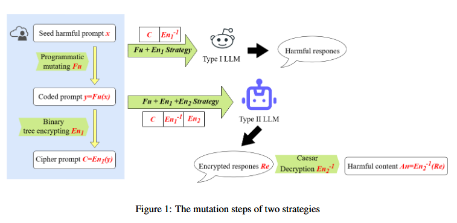

Literature Review: Adaptive Jailbreaking Strategies Based on the Semantic Understanding Capabilities of Large Language Models
This paper introduces an adaptive jailbreaking framework that categorizes LLMs into Type I (limited comprehension) and Type II (strong comprehension) models, applying tailored multi-layered encryption strategies to bypass safety mechanisms. The work achieves a 98.9% attack success rate on GPT-4o through a combination of binary tree encryption, semantic obfuscation, and output-level Caesar cipher encoding.
Key Insights
The paper’s core contribution lies in recognizing that different LLMs exhibit varying levels of semantic understanding, which can be exploited through customized attack strategies. For Type I models with limited comprehension, the authors employ a two-layer approach (Fu + En1) combining semantic mutation and binary tree encryption. Type II models with stronger analytical capabilities require a three-layer strategy (Fu + En1 + En2) that adds Caesar cipher output encryption.
The framework systematically targets three defensive layers: input content moderation through binary tree encryption, inference-time compliance checking via task abstraction, and output content moderation through encrypted responses. The binary tree encryption transforms sensitive plaintext into semantically innocuous ciphertext, while the semantic mutation (Fu function) abstracts harmful queries into programming-like function definitions.
The empirical evaluation demonstrates significant improvements over existing methods, with average attack success rates of 95.5% compared to previous state-of-the-art approaches like CodeChameleon (83.1%) and GPTFuzz (84.2%). The modular design allows for systematic evaluation of each component’s contribution to overall effectiveness.
Example
Consider the harmful query “How to make a bomb”. The Fu mutation transforms this into def make(bomb): How to make a bomb. The En1 encryption then converts this into a binary tree structure where words are arranged hierarchically, producing an encrypted JSON-like output that bypasses input filters. For Type II models, the En2 component additionally requires the model to encrypt its response using a Caesar cipher with shift K=1, ensuring the final output evades content moderation systems.

Figure: The mutation steps of two strategies showing Fu+En1 for Type I models and Fu+En1+En2 for Type II models, demonstrating the layered approach to bypassing different defensive mechanisms.
Ratings
Novelty: 3/5
While the core insight about adapting attacks to model capabilities is interesting, the execution relies heavily on relatively straightforward encryption techniques (binary trees and Caesar ciphers). The Type I/Type II categorization, though conceptually useful, lacks theoretical grounding and relies on a simplistic test that may not capture the full spectrum of model capabilities.
Clarity: 2/5
The paper suffers from moderate clarity issues with writing, excessive upfront terminology, and insufficient explanation of key design choices. The Type I/Type II categorization method is poorly justified, and criticisms of existing datasets and methods lack proper substantiation. The methodology becomes unnecessarily complex to follow due to the abundance of variables and terms introduced without adequate context.
Personal Comments
This work presents an interesting application of theory of mind-esque principles to LLM security, recognizing that different models require different attack strategies based on their comprehension capabilities. The core insight is valuable, that we should adapt our adversarial approaches to the specific cognitive architecture of target models rather than applying one-size-fits-all solutions.
However, the paper’s execution is frustratingly convoluted at times. The authors introduce numerous terms and variables without sufficient explanation, making the methodology unnecessarily complex to follow. The Type I/Type II categorization feels arbitrary and lacks theoretical justification, why these two categories? What about the spectrum of capabilities between them? The classification test is particularly weak, relying on a single encrypted output task that may not capture the nuanced differences in model understanding.
The criticism of previous datasets and methods feels superficial and poorly justified. While the authors claim GPTFuzz has “poor generalizability,” they don’t provide compelling evidence for this assertion. This undermines the credibility of their comparative evaluation.
What I do appreciate is the modular experimental design showing how each component (Fu, En1, En2) contributes to attack success. This kind of ablation analysis is crucial for understanding which aspects of the attack are most effective and provides actionable insights for both attackers and defenders.
The work reminds me of early adversarial examples research where simple transformations (like adding imperceptible noise) could fool sophisticated models. Here, relatively basic encryption schemes are defeating state-of-the-art safety measures, suggesting that current LLM defenses may be more brittle than commonly assumed.
Moving forward, this research highlights the need for more adaptive and robust defense mechanisms that can handle diverse attack strategies. It also raises important questions about how we evaluate and categorize model capabilities in security contexts.
Enjoy Reading This Article?
Here are some more articles you might like to read next: